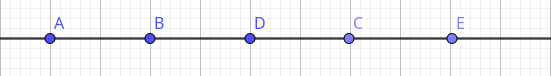

Mathema = tem se dedicado a
criar soluções que estimulam
competências como resolver
problemas e pensar criticamente.
Tica = técnica usada.
Página do professor https://martematica.github.io/cemca
Contrato Didático
Compromisso com horário
Proibido o uso do celular em sala de aula
Avaliação do empenho e desempenho
Respeito entre professor e aluno

Para converter um número decimal em uma fração, coloque o número após a vírgula sobre o seu valor posicional.
Por exemplo, em 0,6 o seis encontra-se na casa dos décimos, então colocamos 6 sobre 10 para criarmos a fração equivalente \(\frac{6}{10}\).
Se for necessário, simplificamos a fração. \(\frac{6}{10} = \frac{3}{5}\)
Exemplos
1) Transforme os números decimais em fração:
a) 0,25=
b) 0,75=
c) 0,5=
d) 1,25=
Para tranformar fração em números decimais basta fazer a divisão
2) Transforme as frações em números decimais:
a) \(\frac{1}{5} =\)
b) \(\frac{3}{5} =\)
c) \(\frac{1}{3} =\)
d) \(\frac{10}{3} =\)
e) Seja \(A, B, C, D \space e \space E\), os números \(0, 1, 2, 3 \space e \space 4\) respectivamente indique o local das frações acima?
Nas dízimas periódicas dividimos a dízima pela fração geratriz, retirando a parte inteira o número que se repete
se torna numerador da fração, e quantidade de digitos que se repete se torna a quantidade de digitos 9 no denominador